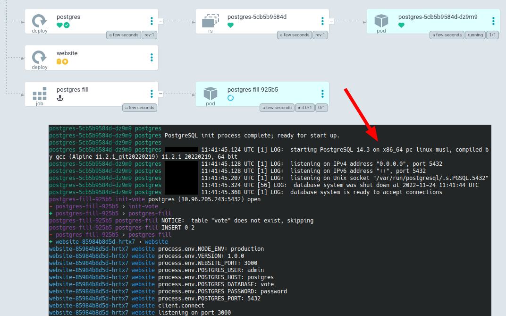
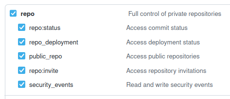
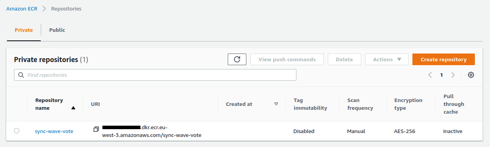
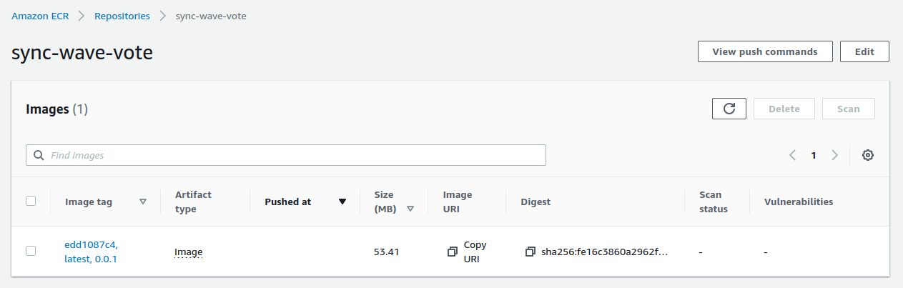
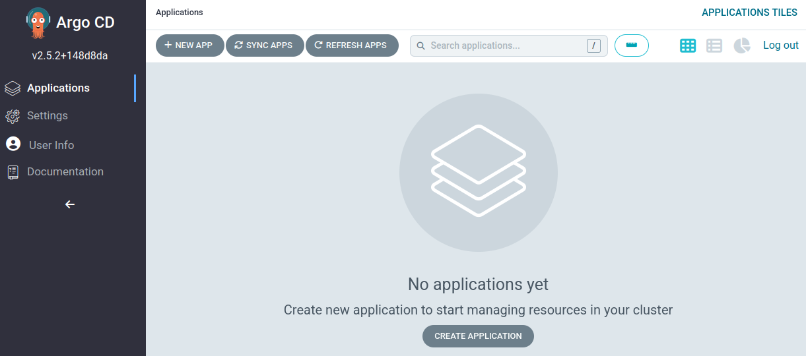
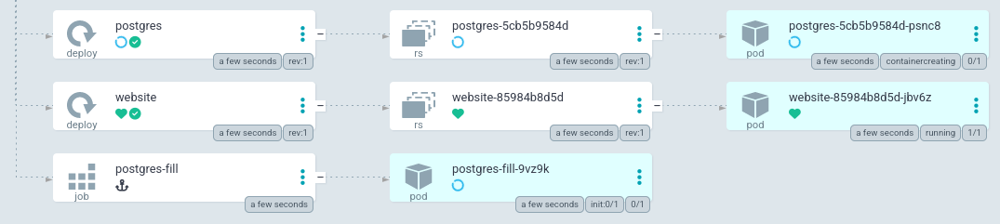
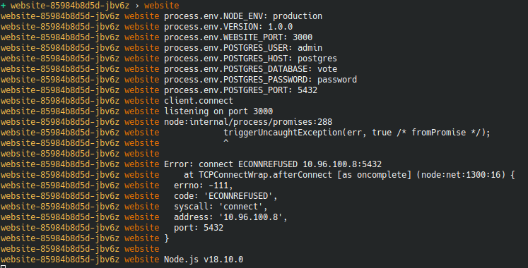
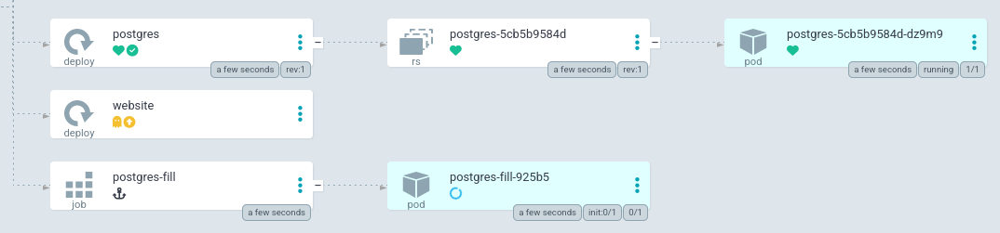
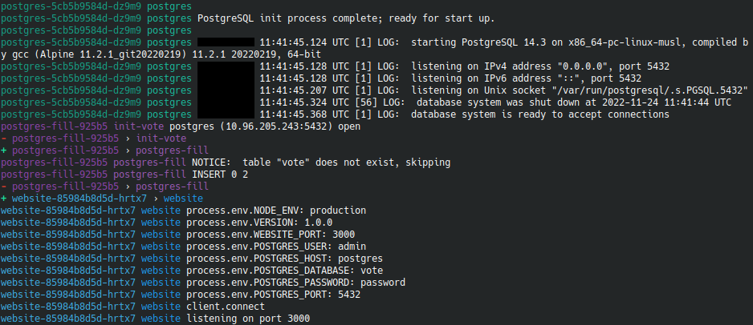
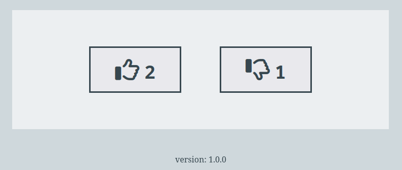

ArgoCD Sync Wave + Postgres
- Build a voting app with Nodejs and Postgres
- Docker images are pushed to a private ECR repository
- Deploy ArgoCD + ArgoCD Image Updater in a Kind cluster
- Deploy the application without ArgoCD Sync Wave
- A Kubernetes Job is used to configure and populate the database
- Watch and analyze deployment behavior
- Then deploy the application with ArgoCD Sync Wave
- Watch and analyze the difference in behavior between deployments

The application
This project is composed by :
- vote : the voting application (a website in Nodejs)
- terraform : several terraform projects to manage the different stages of creation of the main project (reduce bash scripts and replace them with terraform code)
- manifests : the kubenetes templates
- argocd : the templates that define argocd applications
The voting application is defined with a few environment variables :
apiVersion: apps/v1
kind: Deployment
metadata:
name: website
namespace: vote-app
spec:
selector:
matchLabels:
app: website
replicas: 1
template:
metadata:
labels:
app: website
spec:
containers:
- name: website
image: ${website_image}
env:
- name: NODE_ENV
value: production
- name: VERSION
value: "1.0.0"
- name: WEBSITE_PORT
value: "3000"
- name: POSTGRES_USER
value: "admin"
- name: POSTGRES_HOST
value: "postgres"
- name: POSTGRES_DATABASE
value: "vote"
- name: POSTGRES_PASSWORD
value: "password"
- name: POSTGRES_PORT
value: "5432"
ports:
- containerPort: 3000
imagePullSecrets:
- name: regcred
The application uses a Postgres database :
---
apiVersion: apps/v1
kind: Deployment
metadata:
name: postgres
namespace: vote-app
spec:
selector:
matchLabels:
app: postgres
template:
metadata:
labels:
app: postgres
spec:
containers:
- name: postgres
image: postgres:14.3-alpine
imagePullPolicy: Always
ports:
- name: tcp
containerPort: 5432
env:
- name: POSTGRES_DB
value: vote
- name: POSTGRES_USER
value: admin
- name: POSTGRES_PASSWORD
value: password
The database is configured and populated via a Job :
kind: ConfigMap
apiVersion: v1
metadata:
name: postgres-script
namespace: vote-app
data:
SQL_SCRIPT: |-
drop table if exists vote;
--
-- Create table `vote`
--
CREATE TABLE vote (
name varchar(255),
value integer
);
--
-- Insert values into `vote`
--
INSERT INTO vote VALUES
('up', '0'),
('down', '0');
---
apiVersion: batch/v1
kind: Job
metadata:
name: postgres-fill
namespace: vote-app
annotations:
argocd.argoproj.io/hook: Sync
argocd.argoproj.io/hook-delete-policy: HookSucceeded
spec:
backoffLimit: 0
ttlSecondsAfterFinished: 10
template:
spec:
restartPolicy: Never
volumes:
- name: script
configMap:
name: postgres-script
items:
- key: SQL_SCRIPT
path: SQL_SCRIPT_DUMP
initContainers:
- name: init-vote
image: busybox:latest
command: ['sh', '-c', 'until nc -vz postgres 5432 ; do sleep 1; done;']
containers:
- name: postgres-fill
image: postgres:14.3-alpine
volumeMounts:
- name: script
mountPath: '/script'
env:
- name: POSTGRES_DB
value: vote
- name: POSTGRES_USER
value: admin
- name: POSTGRES_PASSWORD
value: password
- name: POSTGRES_HOST
value: "postgres"
- name: SQL_SCRIPT
valueFrom:
configMapKeyRef:
name: postgres-script
key: SQL_SCRIPT
command:
- /bin/sh
args:
- -c
- psql postgresql://${POSTGRES_USER}:${POSTGRES_PASSWORD}@${POSTGRES_HOST}:5432/${POSTGRES_DB} --command="${SQL_SCRIPT}"
You can fork this repository
Important : make sure your repository is private as it will contain sensitive data !
Setup
The env-create script creates an .env file at the root of the project and installs stern if needed :
# create .env file + install stern
make env-create
You must modify the generated .env file with your own variables :
AWS_REGIONGITHUB_OWNERGITHUB_REPOGITHUB_TOKEN
You need to create a Github Token
You need to select repo :

You need to select admin:public_key :

This Github Token is used by Terraform’s github provider :
provider "github" {
owner = var.github_owner
token = var.github_token
}
To assign an SSH key to your Github account :
resource "github_user_ssh_key" "ssh_key" {
title = var.project_name
key = tls_private_key.private_key.public_key_openssh
}
Let’s now initialize terraform projects :
# terraform init (updgrade) + validate
make terraform-init
Setup the infrastructure
# terraform create ecr repo + ssh key
make infra-create
Terraform is used to :
- Create an SSH key and add it to your Github account so you can interact with a private repository
- Create an ECR repository

Build and push the image to ECR
# build + push docker image to ecr
make build-ecr-push
Terraform is used to :
- Build and push the docker image

Start Kind, install ArgoCD + ArgoCD Image Updater
# setup kind + argocd + image updater
make kind-argocd-create
Terraform is used to :
- Start a Kind cluster
- Install and setup ArgoCD and Image Updater
kubectl get ns
NAME STATUS AGE
argocd Active 10s
default Active 80s
kube-node-lease Active 90s
kube-public Active 90s
kube-system Active 90s
local-path-storage Active 70s
Create namespaces + secrets
# create namespaces + secrets
make secrets-create
Terraform is used to :
- Create namepsaces and secrets
- Namespaces are defined with these templates
- Secrets are defined with these templates
kubectl get secrets -n vote-app
NAME TYPE DATA AGE
regcred kubernetes.io/dockerconfigjson 1 10s
Build manifest files from templates
# create files using templates
make templates-create
Terraform is used to :
- Build some files from templates
- Inject variables within ArgoCD applications
- Inject variables within deployements files
Important : generated files must be added to your git repository :
git add . && git commit -m update && git push -u origin master
We open the ArgoCD web interface :
# open argocd (website)
make argocd-open

Watch
Here are 4 useful ways to monitor logs and activity in our cluster
1. In a new terminal window run the command :
# watch logs using stern
make watch-logs
This command uses Stern, a very nice tool
stern . --namespace vote-app
Stern allows you to tail multiple pods on Kubernetes and multiple containers within the pod. Each result is color coded for quicker debugging.
2. In a new terminal window run the command :
# watch all within namespace
make watch-all
This command refresh each second you terminal to list all content within the vote-app namespace
3. In a new terminal window run the command :
# watch pods using kubectl
make watch-pods
This command uses the --watch option of kubectl. Only new states are displayed. No refresh of the complete display of the terminal. So it’s a useful history.
4. In a new terminal window run the command :
# watch events using kubectl
make watch-events
This command retrieve the events with kubectl with a combination of custom-columns. It’s practical and very detailed (sometimes too much).
kubectl get event \
--output=custom-columns=TIME:.firstTimestamp,NAME:.metadata.name,REASON:.reason \
--namespace vote-app \
--watch
Deployment without sync
# create app (no sync)
make app-no-sync-create
We deploy the ArgoCD no-sync-wave application
The application deploys the manifests contained in the manifests/no-sync folder
apiVersion: argoproj.io/v1alpha1
kind: Application
metadata:
name: no-sync-wave
namespace: argocd
finalizers:
- resources-finalizer.argocd.argoproj.io
annotations:
argocd-image-updater.argoproj.io/image-list: website=${website_image}
argocd-image-updater.argoproj.io/website.pull-secret: secret:argocd/aws-ecr-creds#creds
argocd-image-updater.argoproj.io/write-back-method: git:secret:argocd/git-creds
spec:
project: default
source:
repoURL: ${git_repo_url}
targetRevision: HEAD
path: manifests/no-sync
destination:
server: https://kubernetes.default.svc
namespace: default
Important : if you use Job / CronJob + ttlSecondsAfterFinished with ArgoCD, ArgoCD will instantly recreate the job.
Because the desired state differs from the new current state (ArgoCD ignore your ttlSecondsAfterFinished declaration)
To resolve this use the annotations : hook: Sync + hook-delete-policy: HookSucceeded
annotations:
argocd.argoproj.io/hook: Sync
argocd.argoproj.io/hook-delete-policy: HookSucceeded
Hooks are simply Kubernetes manifests tracked in the source repository of your Argo CD Application using the annotation hook
hook: Sync: Executes after allPreSynchooks completed and were successful, at the same time as the application of the manifests
Hooks can be deleted in an automatic fashion using the annotation hook-delete-policy
hook-delete-policy: HookSucceeded: The hook resource is deleted after the hook succeeded (e.g. Job/Workflow completed successfully)
By analyzing the logs in the different terminals, we will see :
- The
websitepod is running beforepostgrespod :

- The logs show connection errors :

- The log history shows the number of failed tries :
postgres-5cb5b9584d-psnc8 0/1 Pending 0 0s
website-85984b8d5d-jbv6z 0/1 Pending 0 0s
postgres-5cb5b9584d-psnc8 0/1 Pending 0 0s
website-85984b8d5d-jbv6z 0/1 Pending 0 0s
postgres-5cb5b9584d-psnc8 0/1 ContainerCreating 0 0s
website-85984b8d5d-jbv6z 0/1 ContainerCreating 0 1s
postgres-fill-9vz9k 0/1 Pending 0 0s
postgres-fill-9vz9k 0/1 Pending 0 0s
postgres-fill-9vz9k 0/1 Init:0/1 0 0s
website-85984b8d5d-jbv6z 1/1 Running 0 36s
website-85984b8d5d-jbv6z 0/1 Error 0 57s
website-85984b8d5d-jbv6z 1/1 Running 1 (23s ago) 59s
website-85984b8d5d-jbv6z 0/1 Error 1 (25s ago) 61s
website-85984b8d5d-jbv6z 0/1 CrashLoopBackOff 1 (13s ago) 72s
website-85984b8d5d-jbv6z 1/1 Running 2 (14s ago) 73s
website-85984b8d5d-jbv6z 0/1 Error 2 (17s ago) 76s
postgres-5cb5b9584d-psnc8 1/1 Running 0 84s
website-85984b8d5d-jbv6z 0/1 CrashLoopBackOff 2 (18s ago) 92s
postgres-fill-9vz9k 0/1 Init:0/1 0 97s
website-85984b8d5d-jbv6z 1/1 Running 3 (37s ago) 111s
website-85984b8d5d-jbv6z 0/1 Error 3 (46s ago) 2m
postgres-fill-9vz9k 0/1 PodInitializing 0 2m2s
postgres-fill-9vz9k 1/1 Running 0 2m3s
postgres-fill-9vz9k 0/1 Completed 0 2m4s
postgres-fill-9vz9k 0/1 Completed 0 2m7s
postgres-fill-9vz9k 0/1 Completed 0 2m8s
postgres-fill-9vz9k 0/1 Terminating 0 2m9s
postgres-fill-9vz9k 0/1 Terminating 0 2m10s
website-85984b8d5d-jbv6z 0/1 CrashLoopBackOff 3 (21s ago) 2m12s
website-85984b8d5d-jbv6z 1/1 Running 4 (47s ago) 2m38s
We remove the application by running this command :
# destroy app (no sync)
make app-no-sync-destroy
Deployment with Sync Wave
ArgoCD Sync Waves are defined by the following annotation :
metadata:
annotations:
argocd.argoproj.io/sync-wave: "5"
Default value is 0. A wave can be negative
Each wave represents a step to complete before moving on to the next wave (lowest values first)
Within a wave, the resources are executed in this order : namespaces then the other resources …
The current delay between each sync wave is 2 seconds
Exhaustive ArgoCD Sync Waves documentation
# create app (no sync)
make app-sync-create
We deploy the ArgoCD Sync Wave application
The application deploys the manifests contained in the manifests/sync folder
Here are some interesting steps defined for the deployment of our application :
-
sync-wave: "0": Postgres database deployment -
sync-wave: "1": Creation of a ConfigMap containing the SQL script -
sync-wave: "1": Job to create the schema and seed the database -
sync-wave: "2": Deploying the Node app
By analyzing the logs in the different terminals, we will see :
- The
websitepod is waiting thepostgres+postgres-fillpods :

- The logs show no errors and a fast and clean execution :

- The log history shows fast and clean steps :
make watch-pods
NAME READY STATUS RESTARTS AGE
postgres-5cb5b9584d-dz9m9 0/1 Pending 0 0s
postgres-5cb5b9584d-dz9m9 0/1 Pending 0 0s
postgres-5cb5b9584d-dz9m9 0/1 ContainerCreating 0 0s
postgres-5cb5b9584d-dz9m9 1/1 Running 0 4s
postgres-fill-925b5 0/1 Pending 0 0s
postgres-fill-925b5 0/1 Pending 0 0s
postgres-fill-925b5 0/1 Init:0/1 0 1s
postgres-fill-925b5 0/1 Init:0/1 0 8s
postgres-fill-925b5 0/1 PodInitializing 0 13s
postgres-fill-925b5 1/1 Running 0 14s
postgres-fill-925b5 0/1 Completed 0 15s
postgres-fill-925b5 0/1 Completed 0 17s
postgres-fill-925b5 0/1 Completed 0 18s
website-85984b8d5d-hrtx7 0/1 Pending 0 0s
website-85984b8d5d-hrtx7 0/1 Pending 0 0s
website-85984b8d5d-hrtx7 0/1 ContainerCreating 0 1s
postgres-fill-925b5 0/1 Terminating 0 22s
postgres-fill-925b5 0/1 Terminating 0 22s
website-85984b8d5d-hrtx7 1/1 Running 0 4s
We open our browser on http://0.0.0.0:9000/ :

Cleaning
This demonstration is now over, we are destroying the resources :
# terraform destroy kind + argocd
make kind-argocd-destroy
# terraform destroy ecr repo + ssh key
make infra-destroy